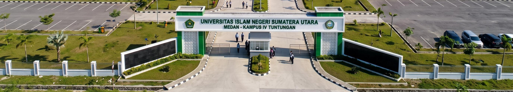

To Do List
Tugas Kelompok 5.
Belum ada tugas. Tambahkan tugas untuk memulai.
Tips: klik dua kali tugas untuk mengedit. Tekan Enter untuk menyimpan atau Esc untuk membatalkan.

Tugas Kelompok 5.
Belum ada tugas. Tambahkan tugas untuk memulai.
Tips: klik dua kali tugas untuk mengedit. Tekan Enter untuk menyimpan atau Esc untuk membatalkan.